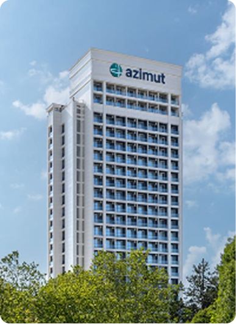
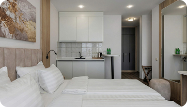
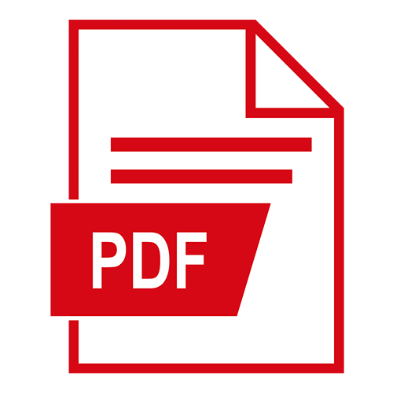

i
При содействии Минобрнауки России и в рамках реализации Стратегии действий по реализации семейной и демографической политики, поддержки многодетности в Российской Федерации запущена единая комплексная модель оказания поддержки молодым студенческим семьям из числа обучающихся и других категорий нуждающихся в формате системы «единого окна».
Стань частью
сообщества СочиГУ
помощь
участников СВО
и детей участников СВО
и студентов, имеющих
детей
кредит
Образовательный кредит
правительства
кредита
получить?
кто взял кредит
раньше?
выгодно?
Постановление правительства
i
17 ноября 2025 года Председатель Правительства Михаил Мишустин подписал два важных документа. Постановление № 1824 утверждает правила предоставления государственной поддержки образовательного кредитования. Распоряжение № 3326-р закрепило перечень специальностей, на которые эта поддержка распространяется.
Ключевые условия кредита
Самое важное нововведение — поддержка предоставляется только для специальностей из утверждённого перечня. Это направления, которые соответствуют задачам технологической независимости и технологического лидерства России.
В перечень вошли десятки профессий, среди которых:
Бакалавриат
-
09.03.03
«Прикладная информатика» -
23.03.01
«Технология транспортных процессов» -
27.03.05
«Инноватика» -
35.03.10
«Ландшафтная архитектура» -
43.03.02
«Туризм» -
44.03.02
«Психолого-педагогическое образование» -
44.03.03
«Специальное (дефектологическое) образование» -
44.03.05
«Педагогическое образование с двумя профилями подготовки» -
49.03.01
«Физическая культура»
Магистратура
-
09.04.03
«Прикладная информатика» -
43.04.02
«Туризм» -
44.04.01
«Педагогическое образование» -
44.04.02
«Психолого-педагогическое образование» -
44.04.03
«Специальное (дефектологическое) образование»
Аспирантура
-
3.1.33
«Восстановительная медицина, спортивная медицина, лечебная физкультура, курортология и физиотерапия, медико-социальная реабилитация»
Что делать тем, кто взял кредит раньше?
Постановление предусматривает переходные положения — можно изменить условия действующего договора (увеличить лимит, продлить льготный период). Обращаться в банк.
Куда обращаться?
Сочинский государственный университет (г. Сочи, ул. Пластунская, д. 94, кабинет 106/2)
Почему это выгодно?
СТАВКА 3% —
это ниже текущей инфляции
Фактически государство берёт на себя основную финансовую нагрузку, чтобы студент мог сосредоточиться на учёбе, а не на подработках. А длительный срок возврата (до 15 лет) делает ежемесячный платёж комфортным даже на старте карьеры.
Если вы или ваш ребёнок планируете поступать на востребованную государством специальность — образовательный кредит по новым правилам может стать отличным подспорьем. Главное — проверить, входит ли выбранное направление в перечень, и обратиться в банк-участник программы.
Общежитие
внутреннего
распорядка
претендовать
на общежитие?
и сроки
заселения
заявление
на общежитие?
право на
первоочередное
заселение?
проживания
в общежитии
заселения
в общежитие
для гостей
самоуправление
Кампус общежитий СочиГУ
Общежитие СочиГУ
удобное место для проживания студентов, где предусмотрены необходимые условия для учёбы, отдыха и повседневной жизни. Здание включает 4 жилых этажа — со 2-го по 5-й. На 1-м этаже расположена прачечная, поэтому поддерживать порядок и чистоту личных вещей удобно без лишних хлопот.
Оснащение комнат
Одноместная комната кровать, шкаф, письменный стол, тумба, лампа
Двухместная комната кровати, большой шкаф, письменный стол, две тумбы, лампа
Посещение гостей и пропускной режим
Для входа посетителей необходимо предъявить документ, удостоверяющий личность, согласно поданному заявлению проживающего
Для проживающих: вход осуществляется по студенческому билету
Время посещения гостей: ежедневно с 10:00 до 22:00
Общежитие СочиГУ на ул. Чайковского, 43 — функциональное пространство для комфортного студенческого проживания
Дополнительная информация
Иногородним студентам предоставляются также альтернативные варианты проживания — аренда квартир и апартаментов рядом с университетом.
Отель «AZIMUT Сити Отель» имеет большую закрытую, охраняемую, благоустроенную территорию с парком, оснащённую камерами видеонаблюдения. Предложенные апартаменты расположены на 2-м ландшафтном этаже, имеют отдельный вход и панорамное остекление с дизайнерскими шторами.
Комнаты оснащены мебелью: кровати с прикроватными тумбами, платяной шкаф, холодильником, а также сплит-системой.
Каждый апартамент имеет собственный санузел, который включает в себя душевую кабину, раковину и инсталляцию.


Стоимость аренды
(за месяц проживания)
при заселении 3 человек: от 17 480 ₽ до 20 859 ₽ с человека,
при заселении 4 человек: 22 025 ₽ с человека
В стоимость аренды входит:
оплата охраны, уборка территории и мест общего пользования, затраты по эксплуатации здания, оплата коммунальных ресурсов, вывоз мусора
Кто имеет право на заселение?
Обучающиеся очной формы обучения
Иногородние и иностранные обучающиеся (бакалавриат, специалитет, магистратура, СПО); Иногородние аспиранты Члены молодых семей с детьми (оба родителя – студенты, один может учиться в другом вузе)
Обучающиеся заочной формы обучения
Места могут быть предоставлены на период сессии
Остальные категории
Если места остаются, их могут получить работники вуза, абитуриенты на время вступительных испытаний и участники программ академического обмена
Льготные категории: право на первоочередное заселение
Дети-сироты и дети, оставшиеся без попечения родителей
Инвалиды вследствие военной травмы и ветераны боевых действий, дети ветеранов боевых действий
Молодые семьи, имеющие детей
Дети-инвалиды, инвалиды I и II групп
Пострадавшие от радиации вследствие катастрофы на ЧАЭС и иных радиационных катастроф
Получившие государственную социальную помощь
Проходившие военную службу по контракту не менее 3 лет
Участники СВО и их дети
Студенты, чьи семьи пострадали в результате чрезвычайных ситуаций
Как получить место:
порядок заселения
Подать заявление
в Управление молодежной политики и воспитательной деятельности. Первокурсники – после выхода приказа о зачислении
Пройти медосмотр
предоставить все медицинские справки
Заключить договор
несовершеннолетние (14-18 лет) заключают договор с письменного согласия законных представителей
Получить пропуск
для входа в общежитие
И не забудь!
студенты с академической задолженностью заселяются после остальных
cтуденты с действующим дисциплинарным взысканием заселяются только после его снятия
с каждым проживающим заключается договор найма
Необходимые документы
Паспорт
Копия (2 разворота: фото и прописка)
Фотографии
3 шт., размер 3×4 см
Документы, подтверждающие льготу (при наличии):
справки из соцзащиты, удостоверения
Справка
Копия справки по форме 086/у
Флюорография
Результаты флюорографии за последний год (оригинал и копия)
Анализ крови
Анализ крови на RW
Справка
Справка от дерматовенеролога
Прививки
Информация о профилактических прививках (сертификат)
Анализ крови
Для иностранных граждан: дополнительно анализ крови на ВИЧ-инфекцию
Стоимость проживания
и оплата
Размер платы
За проживание и коммунальные услуги устанавливается университетом с учетом мнения студенческого совета
Льготы
Университет имеет право снижать плату или освобождать от нее отдельные категории студентов
Контроль
За оплатой осуществляет Управление молодёжной политики и воспитательной деятельности
Срок оплаты
Ежемесячно, до 10 числа месяца, следующего за отчетным. Допускается оплата авансом
ФГБОУ ВО Сочинский государственный университет с 01.01.2026
Ваши права и обязанности
Проживающие
имеют право:
-
Пользоваться имуществом общежития (кухня, душевая, комнаты отдыха, прачечная и т.д.)
-
Пользоваться жилым помещением
-
Участвовать в работе Студенческого совета общежития
-
Обращаться к коменданту по вопросам ремонта и замены оборудования
-
При наличии свободных мест ходатайствовать о переселении в другую комнату
Проживающие
обязаны:
-
Соблюдать правила внутреннего распорядка, технику безопасности и пожарной безопасности
-
Бережно относиться к имуществу и соблюдать чистоту
-
При выезде сдать инвентарь и помещение по акту
-
Своевременно вносить плату за проживание
-
Предупреждать администрацию о своем отсутствии более трех дней
Категорически
запрещается:
-
Курить в здании и на территории, распивать алкоголь
-
Хранить оружие, взрывчатые, наркотические вещества
-
Использовать мощные электроприборы без разрешения
-
Самовольно переселяться и переносить инвентарь
-
Содержать животных
-
Шуметь в период с 22:00 до 08:00 (будни), с 22:00 до 09:00 (выходные), а также с 13:00 до 15:00 (тихий час)
-
Пускать посторонних на ночлег и передавать им свой пропуск
Пропускной режим
и правила для гостей
Вход осуществляется
по электронному пропуску. Передавать его другим лицам запрещено
При утере — написать заявление и оплатить изготовление нового
Время посещений:
с 10:00 до 22:00
при себе необходимо иметь документ, удостоверяющий личность. Проживающий обязан встретить гостя на посту охраны и проводить его при выходе
Для посещения родственников:
проживающий должен не позднее дня, предшествующего визиту, подать заявление на имя проректора и согласовать его с комендантом
Запрещен вход лицам
в состоянии алкогольного или наркотического опьянения
Студенческое самоуправление
В общежитии действует Студенческий совет общежития, который помогает в организации быта, досуга, следит за порядком и представляет интересы студентов во взаимодействии с администрацией. Мнение Студсовета учитывается при решении вопросов о поддержке студентов или применении к ним дисциплинарных взысканий.
Контакты
По всем вопросам, связанным с заселением и проживанием, необходимо обращаться в Управление молодёжной политики и воспитательной деятельности
E-mail loginovaea@sutr.ru, ivanovavk@sutr.ru
Стипендии
академическая
стипендия
и повышенная
государственная
академическая
стипендия
социальная
стипендия
стипендия
аспирантам
Президента
и Правительства
РФ
стипендии (в том
числе
учреждённые
вузом, органами
власти
или компаниями):
поощрения
студентов
и аспирантов
Государственная академическая стипендия
и повышенная государственная академическая стипендия
Государственная
академическая
стипендия
Это основная выплата для студентов бюджетной основы, которые учатся только на «хорошо» и «отлично».
Условия получения:
Для первокурсников: Назначается автоматически всем с начала учебного года и выплачивается до результатов первой сессии.
Для студентов старших курсов: Назначается не реже двух раз в год по итогам сессии. Главные требования — отсутствие троек и академических задолженностей. При этом оценки по факультативам не учитываются.
Повышенная государственная
академическая
стипендия
Эта выплата доступна студентам, уже получающим государственную академическую стипендию, и выделяется на конкурсной основе в пределах 10% от числа всех стипендиатов вуза.
Как принять участие?
Подать заявление и подтверждающие документы в стипендиальную комиссию института. Достижения оцениваются в баллах по пяти направлениям, согласно приложению № 1 Положения о стипендиальном обеспечении и других формах материальной поддержки студентов и аспирантов, обучающихся в ФГБОУ ВО «Сочинский государственный университет»
Государственная социальная стипендия
Государственная стипендия аспирантам
Государственная академическая стипендия назначается студентам в зависимости от успехов в учебе на основании результатов промежуточной аттестации в соответствии с календарным учебным графиком с первого окончания, не реже двух раз в год.
Студент, которому назначается государственная академическая стипендия, должен соответствовать следующим требованиям:
- отсутствие по итогам промежуточной аттестации оценки «удовлетворительно»;
- отсутствие академической задолженности.
Государственная академическая стипендия обучающимся устанавливается по итогам последней промежуточной аттестации.
Время промежуточной аттестации включает:
- период зачетно-экзаменационной сессии,
- период прохождения практик,
- период сдачи отчетов по практикам, согласно разделу
Стипендии Президента и Правительства РФ
Стипендия Президента Российской Федерации
для высшего образования
Стипендия Правительства Российской Федерации
для высшего образования
Наименование стипендии:
Стипендия Президента Российской Федерации для высшего образования
Описание стипендии
Стипендия Президента Российской Федерации — это самая престижная государственная стипендия в России, призванная на высшем уровне поддержать, поощрить и официально отметить тех студентов, которые проявили себя и добились выдающихся успехов.
Подробно со стипендией вы можете ознакомиться на сайте: https://стипендиатроссии.рф, а также на страницах в социальных сетях: вконтакте, телеграм
Целевые направления обучения
Приоритетные направления, (за исключением 1, 2 курса 2025-2026 уч.года бакалавриата/специалитета)
Форма обучения
Очная (бюджет/договор)
Период проведения конкурса
с 30 апреля 2026 г. по 15 июня 2026
Размер стипендии
30000
Период выплаты
12 месяцев (с 1 сентября)
Критерии отбора
- граждане Российской Федерации;
Курс обучения:
- кандидатами являются обучающиеся на третьем и последующих курсах по программам бакалавриата и программам специалитета, а также на первом и последующих курсах по программам магистратуры. Обучение по специальностям и направлениям подготовки, включенным в перечень специальностей и направлений подготовки и относящимся к конкурсной группе, по которой кандидат участвует в конкурсе
Оценки:
- отсутствие академической задолженности и оценок «удовлетворительно» за весь период обучения, а также получение не менее 75 процентов оценок «отлично» от общего количества полученных оценок по итогам промежуточных аттестаций в период с 1 апреля года, предшествующего году, в котором назначается стипендия, по 31 марта года, в котором назначается стипендия (далее — конкурсный период). Для кандидатов, обучающихся на первом курсе по программам магистратуры, — получение документа об образовании и о квалификации с отличием (диплом бакалавра, диплом специалиста)
Достижения:
- наличие публикации в рецензируемых научных (учебно-научных, учебно-методических) изданиях и журналах
- опыт участия в выполнении научно-исследовательских, опытно-конструкторских работ или реализация инновационных проектов в области технологий, включенных в перечень важнейших наукоемких технологий, утвержденный Указом Президента Российской Федерации от 18 июня 2024 г. № 529
- наличие полученных результатов интеллектуальной деятельности, подтвержденных патентом, свидетельством
- победы в мероприятиях, включенных в перечень мероприятий, утвержденных в соответствии с п.9 Положения о предоставлении и выплате грантов Президента РФ, утвержденного постановлением Правительства РФ от 23.05.2020 № 744
- победители всероссийских и международных олимпиад, творческих конкурсов, фестивалей; если в документе, подтверждающем победу претендента не указан статус мероприятия и год проведения, то необходимо приложить документ, содержащий требуемые сведения)
- авторы открытий, двух и более изобретений, научных статей, опубликованных в центральных изданиях РФ и за рубежом, а также работы, которые содержат информацию ограниченного доступа и т.п.
- одна и та же публикация, представленная в разных изданиях или материалах конференции, или в переводе на другой язык, к рассмотрению не принимается.
- при командной победе (при отсутствии списка победителей в дипломе) необходимо приложить документ, подтверждающий вхождение претендента в состав команды;
- получение претендентом различных денежных поощрений (включая стипендии) не рассматривается как оценочное мероприятие и на конкурсном отборе в качестве достижения не принимается.
- к документам, подтверждающим достижения претендентов на иностранном языке, необходимо приложить, заверенный Организацией перевод. Прикладывать перевод публикаций, представленных на иностранном языке, не требуется.
Наличие одного и более достижений, полученных в период с 1 апреля года, предшествующего году, в котором назначается стипендия, по 31 марта года, в котором назначается стипендия, предшествующих назначению стипендии (с 1 апреля 2025 по 31 марта 2026 года).
Пакет документов
- Заявление
- Сопроводительное письмо
- Согласие на обработку персональных данных
- Согласие на распространение персональных данных
- копии грамот, дипломов и иных документов, свидетельствующие о победах кандидата;
- копии публикаций научных статей.
ВНИМАНИЕ! Срок приема документов продлен до 10 июня 2026 года. Для участия в конкурсе необходимо принести пакеты документов по адресу:
По всем вопросам вас проконсультирует:
Дополнительная информация
Обучающиеся могут претендовать на назначение как одной из стипендий (Правительства РФ, Президента РФ), так и обеих стипендий. При этом обучающимся, которым будет назначена стипендия Президента РФ, стипендия Правительства РФ назначаться не будет.
Если вы являетесь стипендиатом Президентом РФ, то у вас есть уникальная возможность, чтобы о вас узнала вся Россия, нужно просто отправить свой видеоролик "История успеха стипендиата" и подписанную копию согласия на размещение персональных данных на электронную почту: stipendat@internet.ru
Регламентирующие документы

Указ Президента Российской Федерации от 25.12.2024 года № 1106 «О стипендии Президента Российской Федерации для студентов, курсантов и слушателей, обучающихся по образовательным программам высшего образования» 518.7 КБ Постановление Правительства Российской Федерации от 04.02.2025 года № 412 «О назначении и выплате стипендии Президента Российской Федерации для студентов, курсантов и слушателей, обучающихся по образовательным программам высшего образования» 346.9 КБ Приказ Минобрнауки России от 06.05.2025 г. № 417 «Об утверждении методики рейтинговой оценки критериев назначения стипендии Президента Российской Федерации для студентов, курсантов и слушателей, обучающихся по образовательным программам высшего образования, по конкурсным группам» 1.6 МБ Приказ Минобрнауки России от 27.02.2026 № 102 «Об установлении квот на стипендии Президента Российской Федерации для студентов, курсантов и слушателей, обучающихся по образовательным программам высшего образования, для конкурсных групп на 2026/27 учебный год» 436.7 КБ Перечень специальностей и направлений подготовки высшего образования, соответствующих приоритетам научно-технологического развития РФ 221.5 КБ Объявление от Минобрнауки России от 29.04.2026 № ПО-16/ОП «Объявление о проведении конкурсного отбора на назначение стипендии Президента Российской Федерации и стипендии Правительства Российской Федерации для студентов, курсантов и слушателей, обучающихся по образовательным программам высшего образования, на 2026/27 учебный год» 362.4 КБНаименование стипендии:
Стипендия Правительства Российской Федерации для высшего образования
Описание стипендии
Одна из самых престижных правительственных стипендий – Стипендия Правительства Российской Федерации – станет достойной поддержкой и признанием для тех студентов, которые проявили выдающиеся способности в своей учебной и научной деятельности.
Подробно со стипендией вы можете ознакомиться на сайте: https://стипендиатроссии.рф, а также на страницах в социальных сетях: вконтакте, телеграм
Целевые направления обучения
Все направления (за исключением 1,2 курса 2025-2026 уч.года бакалавриата/специалитета)
Форма обучения
Очная, бюджет
Период проведения конкурса
с 30 апреля 2026 г. по 15 июня 2026
Размер стипендии
20000
Период выплаты
12 месяцев (с 1 сентября)
Критерии отбора
- граждане Российской Федерации;
Форма и курс обучения
- очная форма обучения на третьем и последующих курсах по образовательным программам высшего образования – программам бакалавриата, программам специалитета, а также на первом и последующих курсах по образовательным программам высшего образования – программам магистратуры;
Оценки
- отсутствие академической задолженности и оценок «удовлетворительно» за весь период обучения, а также получение не менее 50 процентов оценок «отлично» от общего количества полученных оценок по итогам промежуточных аттестаций в период с 1 апреля года, предшествующего году, в котором назначается стипендия, по 31 марта года, в котором назначается стипендия. Для кандидатов, обучающихся на первом курсе по образовательным программам высшего образования – программам магистратуры, – наличие не менее 50 процентов оценок «отлично» от общего количества полученных оценок при отсутствии оценок «удовлетворительно» в приложении к документу об образовании и о квалификации (диплому бакалавра, диплому специалиста) и (или) документ, подтверждающий отсутствие академической задолженности по результатам первой промежуточной аттестации
Достижения
- наличие публикации в рецензируемых научных (учебно-научных, учебно-методических) изданиях и журналах, материалах конференций, сборниках
- опыт участия в выполнении научно-исследовательских, опытно-конструкторских работ или реализации инновационных проектов
- наличие награды/приза за результаты научной, образовательной, культурно-творческой или спортивной деятельности
- победители всероссийских и международных олимпиад, творческих конкурсов, фестивалей; если в документе, подтверждающем победу претендента не указан статус мероприятия и год проведения, то необходимо приложить документ, содержащий требуемые сведения)
- авторы открытий, двух и более изобретений, научных статей, опубликованных в центральных изданиях РФ и за рубежом, а также работы, которые содержат информацию ограниченного доступа и т.п.
- одна и та же публикация, представленная в разных изданиях или материалах конференции, или в переводе на другой язык, к рассмотрению не принимается.
- при командной победе (при отсутствии списка победителей в дипломе) необходимо приложить документ, подтверждающий вхождение претендента в состав команды;
- получение претендентом различных денежных поощрений (включая стипендии) не рассматривается как оценочное мероприятие и на конкурсном отборе в качестве достижения не принимается;
- к документам, подтверждающим достижения претендентов на иностранном языке, необходимо приложить, заверенный Организацией перевод. Прикладывать перевод публикаций, представленных на иностранном языке, не требуется.
Наличие одного и более достижений, полученных в период с 1 апреля года, предшествующего году, в котором назначается стипендия, по 31 марта года, в котором назначается стипендия (с 1 апреля 2025 по 31 марта 2026 года).
Пакет документов
- Заявление
- Сопроводительное письмо
- Согласие на обработку персональных данных
- Согласие на распространение персональных данных
- копии грамот, дипломов и иных документов, свидетельствующие о победах кандидата;
- копии публикаций научных статей.
ВНИМАНИЕ! Срок приема документов продлен до 10 июня 2026 года. Для участия в конкурсе необходимо принести пакеты документов по адресу:
По всем вопросам вас проконсультирует:
Дополнительная информация
Обучающиеся могут претендовать на назначение как одной из стипендий (Правительства РФ, Президента РФ), так и обеих стипендий. При этом обучающимся, которым будет назначена стипендия Президента РФ, стипендия Правительства РФ назначаться не будет.
Если вы являетесь стипендиатом Правительства РФ, то у вас есть уникальная возможность, чтобы о вас узнала вся Россия, нужно просто отправить свой видеоролик "История успеха стипендиата" и подписанную копию согласия на размещение персональных данных на электронную почту: stipendat@internet.ru
Регламентирующие документы
Постановление Правительства Российской Федерации от 23.12.2024 года № 1861 «О стипендии Правительства Российской Федерации для студентов, курсантов и слушателей, обучающихся по образовательным программам высшего образования»
1.7 МБ
Постановление Правительства Российской Федерации от 04.04.2025 года № 430 «Об утверждении Правил назначения и выплаты стипендии Правительства Российской Федерации для студентов, курсантов и слушателей, обучающихся по образовательным программам высшего образования»
195.3 КБ
Приказ Минобрнауки России от 06.05.2025 г. № 416 «Об утверждении методики рейтинговой оценки критериев назначения стипендии Правительства Российской Федерации для студентов, курсантов и слушателей, обучающихся по образовательным программам высшего образования, по конкурсным группам»
1.9 МБ
Приказ Минобрнауки России от 27.02.2026 № 103 «Об установлении квот на стипендии Правительства Российской Федерации для студентов, курсантов и слушателей, обучающихся по образовательным программам высшего образования, для конкурсных групп на 2026/27 учебный год»
436.7 КБ
Объявление от Минобрнауки России от 29.04.2026 № ПО-16/ОП «Объявление о проведении конкурсного отбора на назначение стипендии Президента Российской Федерации и стипендии Правительства Российской Федерации для студентов, курсантов и слушателей, обучающихся по образовательным программам высшего образования, на 2026/27 учебный год»
362.4 КБ
Именные стипендии
Университет учредил дополнительные выплаты для студентов, чьи родители участвуют в СВО.
Стипендия им. Б.Б. Максудова — за успехи в науке и учёбе (победы в конференциях, публикации, гранты, патенты).
Стипендия им. Д.Д. Багрова — за успехи в общественной, творческой, спортивной и патриотической деятельности.
Процедура участия в конкурсе:
- Подача пакета документов осуществляется в деканаты институтов в период до 30 января (на февраль-июль) и до 25 июля (на август-январь).
- Пакет документов: Заявление, анкета, копия зачётной книжки, справка об участии родителя в СВО, документы о родстве и портфолио с подтверждением достижений (грамоты, дипломы, сертификаты).
- Комиссия формирует рейтинг баллов, результаты публикуются на сайте вуза.
Подробные условия участия в конкурсах на получение именных стипендий утверждены Приказом от 30.12.2025 №387 Об утверждении Положений об учреждении, назначении и выплате стипендий имени Б.Б. Максудова, Д.Д. Багрова лицам из числа детей граждан Российской Федерации, принимающих (принимавших) участие в специальной военной операции, обучающимся ФГБОУ ВО "Сочинский государственный университет".
Заявление на участие в конкурсе на соискание стипендии им. Б.Б. Максудова
Заявление на участие в конкурсе на соискание стипендии им. Д.Д. Багрова
Анкета соискателя стипендии им. Б.Б. Максудова
Анкета соискателя стипендии им. Д.Д. Багрова
Положения об учреждении, назначении и выплате стипендий им. Б.Б. Максудова и Д.Д. Багрова
Система поощрения студентов
и аспирантов
В Сочинском государственном университете действует комплексная система поощрения обучающихся, активно участвующих в жизни вуза (после сдачи первой зачетной сессии).
Основания для поощрения:
- Достижения в учёбе, науке, творчестве, спорте, проектной деятельности, волонтёрстве, патриотической работе и профориентации.
Формы поощрения:
- Моральные: Благодарственные письма (в том числе родителям и их работодателям), грамоты, публикации на ресурсах вуза.
- Материальные: Ценные подарки, разовые выплаты, назначение повышенной или именной стипендии, оплата поездок на конференции и форумы, льготные путёвки на отдых.
Ходатайство с описанием заслуг подаётся руководителем подразделения, директором или лидерами студенческого самоуправления на рассмотрение Учёного совета университета, согласно Приказу от 20.02.2026 №37 О введении в действие Положения о поощрении студентов и аспирантов ФГБОУ ВО "Сочинский государственный университет".
Форма ходатайства к поощрению студентов и аспирантовКонтакты
Вид стипендии
Куда обращаться
Государственная академическая стипендия
Институт туризма, гостеприимства и креативных индустрий: +7 (862) 268-10-70
Высшая инженерная школа: +7 (862) 253-08-25
Институт экономики, управления и права:
+7 (862) 268-38-23 (по направлениям экономики)
+7 (862) 268-25-81 (по направлениям юриспруденции)
Институт педагогики и психологии: +7 (862) 268-31-05
Институт прикладных технологий и сервиса:
+7 (862) 254-47-43
Государственная стипендия аспирантам
Левина Надежда Сергеевна
начальник отдела аспирантуры и докторантуры
Управления научной деятельности
тел.: +7 (862) 268-11-30, e-mail: levinanv@sutr.ru
Государственная академическая стипендия в повышенном размере (научная деятельность)
Дмитриев Юрий Антольевич
и.о. начальника управления научной деятельности
тел.: +7 (862) 268-11-90, e-mail: dmirnevya@sutr.ru
Государственная академическая стипендия в повышенном размере (учебная деятельность)
Ердакова Виктория Павловна
проректор
тел.: +7 (862) 264-51-21, e-mail: erdakovavp@sutr.ru
Государственная академическая стипендия в повышенном размере (спортивная, культурно-творческая и общественная деятельность)
Иванова Виктория Константиновна
директор Центра студенческих инициатив
тел.: +7 (912) 340-62-75, e-mail: ivanovavk@sutr.ru
Государственная социальная стипендия
Институт туризма, гостеприимства и креативных индустрий: +7 (862) 268-10-70
Высшая инженерная школа: +7 (862) 253-08-25
Институт экономики, управления и права:
+7 (862) 268-38-23 (по направлениям экономики)
+7 (862) 268-25-81 (по направлениям юриспруденции)
Институт педагогики и психологии: +7 (862) 268-31-05
Институт прикладных технологий и сервиса:
+7 (862) 254-47-43
Стипендии Президента и Правительства
Ердакова Виктория Павловна
проректор
тел.: +7 (862) 264-51-21, e-mail: erdakovavp@sutr.ru
Именные стипендии Д.Д. Багрова и Б.Б. Максудова
Иванова Виктория Константиновна
директор Центра студенческих инициатив
тел.: +7 (912) 340-62-75, e-mail: ivanovavk@sutr.ru
Поощрение студентов и аспирантов
Логинова Екатерина Александровна
начальник Управления молодёжной политики и воспитательной деятельности
тел.: +7 (988) 386-17-76, e-mail: loginovaea@sutr.ru
Мы на связи! Перейти на старую версию сайта